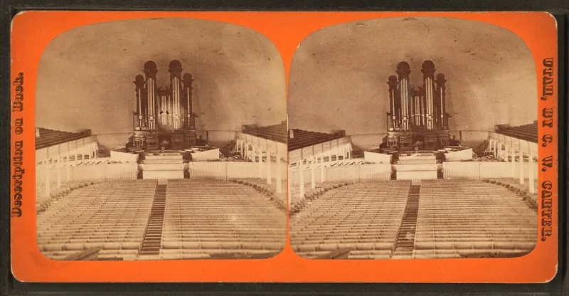

Brigham Young: some sins need the sinner's blood
UnrefutedNo good counter-argument has been published by LDS scholars.
What Brigham Young taught
That some sins go beyond what Christ's blood can reach, and need the sinner's own. From the Tabernacle pulpit in 1856 he said that such men, if their eyes were open, "would be perfectly willing to have their blood spilt upon the ground, that the smoke thereof might ascend to heaven as an offering for their sins." It is in the Journal of Discourses 4:53-54, and again at 4:219-220 in 1857.
What the Bible says
Hebrews 10:14 — "by one offering he hath perfected for ever them that are sanctified." 1 John 1:7 — the blood of Jesus Christ "cleanseth us from all sin." And John 19:30 — "It is finished." See also Hebrews 9:26 and 1 Timothy 2:5-6.
What the church says now
In June 2010 it stated formally that "so-called blood atonement… is not a doctrine of The Church of Jesus Christ of Latter-day Saints." Bruce R. McConkie had repudiated it in a letter in 1978.
Their answer, at full strength
FAIR and Mormonr make four points. The language belongs to the heated preaching of the Mormon Reformation in 1856 and 1857, and was meant to provoke repentance.
It was framed as voluntary, and tied to capital punishment for capital crimes, echoing Genesis 9:6 — not to vigilante killing. It was never canonised; D&C 42:18 and 42:79 prescribe excommunication and the civil courts.
And the church has repudiated it by name.
How strong is this argument?
Strong for you, and use it gently. Both the sermons and the disavowal are documented.
What Young preached — that some sins lie beyond the reach of Christ's blood — flatly contradicts Hebrews 10:14 and 1 John 1:7. The hyperbole reading strains against his own words, which are sober counsel across several sermons and years.
The weight of this now is not the doctrine. It is that a prophet taught from the pulpit what the church now calls false.
What to say
"Is there any sin Christ's blood cannot reach? Hebrews 10:14 says no."


How they answer this — at its strongest
That was Reformation preaching. It was never made canon, and the church dropped it in 2010.
FAIR and Mormonr answer on four fronts.
The blood-atonement language belongs to the heated preaching of the Mormon Reformation, in 1856 and 1857. It was overstatement, meant to stir people to repent.
It was framed as a free choice, and tied to a view of the death penalty for capital crimes, echoing Genesis 9:6. It was not tied to mob action. There is no evidence the church ever set up any system of killing sinners to save them.
It was never made canon. D&C 42:18 and 42:79 call for church trial and the civil courts, not ritual death.
And the church has since dropped it by name, in Bruce R. McConkie's 1978 letter and in the 2010 statement. It stands today as an abandoned guess from the 1800s.
The verdict
Strong for you, gently: a prophet preached what the church now calls false.
Both the teaching and its disavowal are documented beyond dispute. The sermons are word for word in the Journal of Discourses at 4:53-54 and 4:219-220. And the 2010 statement shows the church understands what was taught well enough to disavow it by name.
What Young preached, that certain sins lie beyond the reach of Christ's blood, flatly contradicts Hebrews 10:14 and 1 John 1:7.
The hyperbole reading strains against his own words. They read as sober counsel across several sermons and several years.
The grade is medium because the doctrine is genuinely repudiated and carries no weight in salvation now. Its lasting force is as a second clear case, beside Adam-God, of a prophet teaching from the pulpit what the church now calls false doctrine.
Sources
- Brigham Young sermon, JD 4:215–221 (full text, Utah Lighthouse Ministry scan)
- Deseret News: Mormon church statement on blood atonement (June 18, 2010)
- Mormonr: Blood Atonement and Capital Punishment (documents both sermons and disavowals)